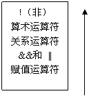

在程序中经常需要比较两个量的大小关系，以决定程序下一步的工作。比较两个量的运算符称为关系运算符。
在Ｃ语言中有以下关系运算符：
1) < 小于
2) <= 小于或等于
3) > 大于
4) >= 大于或等于
5) == 等于
6) != 不等于
关系运算符都是双目运算符，其结合性均为左结合。关系运算符的优先级低于算术运算符，高于赋值运算符。 在六个关系运算符中，<,<=,>,>=的优先级相同，高于==和!=，==和!=的优先级相同。
关系表达式的一般形式为：
表达式 关系运算符 表达式
例如：
a+b>c-d
x>3/2
‘a’+1<c
-i-5*j==k+1
都是合法的关系表达式。由于表达式也可以又是关系表达式。 因此也允许出现嵌套的情况。例如：
a>(b>c)
a!=(c==d)
等。
关系表达式的值是真”和“假”，用“1”和“0”表示。
如： 5>0的值为“真”，即为1。
(a=3)>(b=5)由于3>5不成立，故其值为假，即为0。
main(){
char c='k';
int i=1,j=2,k=3;
float x=3e+5,y=0.85;
printf("%d,%d\n",’a’+5< c,-i-2*j>=k+1);
printf("%d,%d\n",1< j<5,x-5.25<=x+y);
printf("%d,%d\n",i+j+k==-2*j,k==j==i+5);
}
在本例中求出了各种关系运算符的值。字符变量是以它对应的ASCII码参与运算的。对于含多个关系运算符的表达式，如k==j==i+5,根据运算符的左结合性，先计算k==j,该式不成立，其值为0，再计算0==i+5，也不成立，故表达式值为0。
Ｃ语言中提供了三种逻辑运算符：
1) && 与运算
2) || 或运算
3) ! 非运算
与运算符&&和或运算符||均为双目运算符。具有左结合性。非运算符!为单目运算符，具有右结合性。逻辑运算符和其它运算符优先级的关系可表示如下：
!（非）→&&(与)→||(或)
“&&”和“||”低于关系运算符，“！”高于算术运算符。
按照运算符的优先顺序可以得出：
a>b && c>d 等价于 (a>b)&&(c>d)
!b==c||d<a 等价于 ((!b)==c)||(d<a)
a+b>c&&x+y<b 等价于 ((a+b)>c)&&((x+y)<b)
逻辑运算的值也为“真”和“假”两种，用“1”和“0 ”来表示。其求值规则如下：
例如：
5>0 && 4>2
由于5>0为真，4>2也为真，相与的结果也为真。
例如：
5>0||5>8
由于5>0为真，相或的结果也就为真。
例如：
!(5>0)
的结果为假。
虽然Ｃ编译在给出逻辑运算值时，以“1”代表“真”，“0 ”代表“假”。 但反过来在判断一个量是为“真”还是为“假”时，以“0”代表“假”，以非“0”的数值作为“真”。例如：
由于5和3均为非“0”因此5&&3的值为“真”，即为1。
又如：
5||0的值为“真”，即为1。